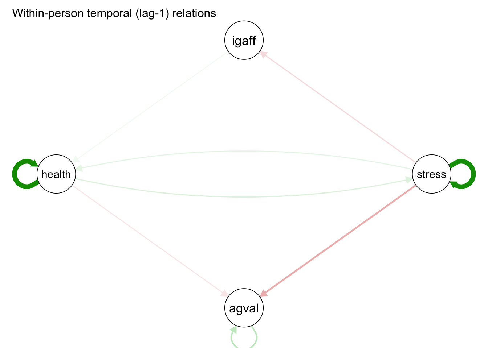

6.5 Multiple Linear Regression
Now, let’s include a second predictor. We have information on the number of years of education for the children’s fathers, variable daded. The values in daded indicate the number of years of education each father completed. First, let’s take a look at the distribution of this new predictor variable.
## vars n mean sd median trimmed mad min max range skew kurtosis se
## X1 1 204 10.81 2.7 11.5 11 2.97 5.5 18 12.5 -0.36 0.01 0.19ggplot(data=wiscsub, aes(x=daded)) +
geom_histogram(binwidth=2.5, fill="white", color="black") +
xlim(0,20) +
xlab("Number of Years of Father's Education") +
ylab("Count") +
theme_classic()## Warning: Removed 2 rows containing missing values (`geom_bar()`). And the relation between Grade 2 verbal scores and daded.
And the relation between Grade 2 verbal scores and daded.
ggplot(data=wiscsub, aes(x=daded, y = verb2)) +
geom_point() +
xlim(0,20) +
ylim(0,50) +
xlab("Father's Education (Years)") + ylab("Verbal Ability Grade 2") +
theme_classic()
6.5.1 Regression Equation
Our model now becomes
\[ verb_{2i} = b_01_{i} + b_1verb^{*}_{1i} + b_2daded^{*}_{i} + \epsilon_{i}\]
where \(verb^{*}_{1i}\) is the sample-centered version of \(verb_{1i}\), and \(daded^{*}_{i}\) is the sample-centered version of \(daded_{i}\).
The slope, \(b_2\) is the expected difference in grade 2 verbal score for each 1 year difference in father’s education.
We can also center the daded variable.
6.5.2 Fit Model in R
model4 <- lm(verb2 ~ 1 + verb1_star + daded_star,
data = wiscsub,
na.action = na.exclude)
summary(model4)##
## Call:
## lm(formula = verb2 ~ 1 + verb1_star + daded_star, data = wiscsub,
## na.action = na.exclude)
##
## Residuals:
## Min 1Q Median 3Q Max
## -9.4354 -2.9189 -0.1542 2.3746 11.1678
##
## Coefficients:
## Estimate Std. Error t value Pr(>|t|)
## (Intercept) 25.41534 0.29069 87.430 < 2e-16 ***
## verb1_star 0.66786 0.05626 11.872 < 2e-16 ***
## daded_star 0.41454 0.12108 3.424 0.000749 ***
## ---
## Signif. codes: 0 '***' 0.001 '**' 0.01 '*' 0.05 '.' 0.1 ' ' 1
##
## Residual standard error: 4.152 on 201 degrees of freedom
## Multiple R-squared: 0.5422, Adjusted R-squared: 0.5377
## F-statistic: 119.1 on 2 and 201 DF, p-value: < 2.2e-16Now we have an intercept and two slopes.
6.5.3 Path Diagram

6.5.3.1 Interpreting Model Parameters
\(b_0\) is the expected value of the outcome variable when all other variables are 0. Therefore, in this case, \(b_0\) is the expected Grade 2 verbal score for a child with an average Grade 1 verbal score (i.e. \(verb^{*}_{1i}\) = 0) and whose father had an average education (i.e. \(daded^{*}_{i}\) = 0, \(\bar{daded_{i}}\) = 10.81 years of education.
\(b_1\) is the expected difference in the outcome for a 1-unit difference in \(x_{1i}\). In this example (i.e. ‘model4’), \(b_1\) is the expected difference in Grade 2 verbal score (outcome variable, \(y_i\) = \(verb_{2i}\)) for a 1 point difference in the Grade 1 verbal score (\(x_{1i}\) = \(verb^{*}_{1i}\)), holding constant the level of father’s education.
\(b_2\) is the expected difference in the outcome for a 1-unit difference in \(x_{2i}\). For this example (i.e. ‘model4’), \(b_2\) is the expected difference in Grade 2 verbal score (outcome variable, \(y_i\) = \(verb_{2i}\)) for each year difference in father’s education (\(x_{2i}\) = \(daded^{*}_i\)), holding constant in Grade 1 verbal score.
6.5.4 A Note on Interpretation
The distinguishing feature for interpretation in linear models without interactions or higher-order terms is that the effect of a given change in an independent variable is the same regardless of the value of that variable (at the start of its change) and regardless of the level of the other variables in the model.
Interpretation only needs to specify which variable is changing, by how much, and that other variables are being held constant.
In regard to our last example, years of father’s education does impact the relationship between Grade 1 and 2 verbal scores. Likewise, the effect of father’s education on Grade 1 verbal scores does not depend on Grade 1 verbal scores. Said in a different way, no matter what a child’s Grade 1 verbal score was, the effect of father’s education on Grade 2 verbal scores is the same.
Consider another model with categorical and continuous predictors, grad and verb1_star, respectively.
library("ggiraphExtra")
model4b <- lm(verb2 ~ 1 + verb1_star + grad,
data = wiscsub,
na.action = na.exclude)
ggPredict(model4b,se=TRUE,interactive=FALSE)
Notice in the plot, whether a student’s father graduated HS does not impact the relationship between Grade 1 and 2 verbal scores. Differences in Grade 1 and 2 verbal scores are not dependent on whether or not the father graduated HS.
Most importantly, using the coefficients themselves we can easily interpret the model parameters.